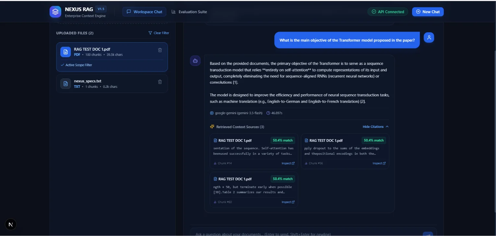

NEXUS RAG
Standard AI vectors look for general meaning, but completely lose exact numbers and fiscal years.
Finds exact letters and tickers, but fails on semantic synonym terms.
Merged both search methods. High recall, but complex balance sheets still lost table context.
Preserves tables intact, routing calculations to an isolated Python sandbox.

⚙️ Deep Architecture: Inspect the Full 10-Stage Pipeline
Ingests raw multi-page corporate filings, research papers, and reports. Cleans formatting artifacts and detects page boundaries.